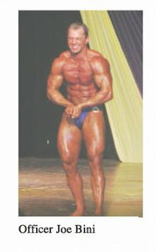

The arrest yesterday (Tuesday, June 3) of 39-year-old Denver resident Joseph Bini on charges of sexual assault and child sexual enticement is an unsavory coda to a really bad decade in the life of a troubled and troubling man. It also serves as an appropriate postscript to a scandal that typifies our militarized law enforcement culture and illustrates the corrupt impunity enjoyed by agents of the emerging Homeland Security State.
Ten years ago, Bini wasn't a middle-aged former bodybuilder with an ill-advised soul patch and a skeevy interest in under-aged girls. He was an officer in the Denver Police Department with a gift for fiction-writing. He used that skill to obtain no-knock search warrants from indifferent judges. In 1998, Bini was caught fabricating "evidence" to obtain a warrant. This is first-degree perjury, a class 4 felony under Colorado law. And this variety of perjury is the most serious kind, since it is used to obtain a warrant to commit State-sanctioned violence.
Bini wasn't prosecuted, nor did he face serious professional sanctions for his offense. This meant that he was still on the force, and still regarded as a credible affiant, when he swore out the September 29, 1999 affidavit used to obtain a no-knock warrant for a domicile at 3738 High Street.
In his affidavit, Bini claimed to have sent a "reliable" informant to that address several days earlier to purchase $20 work of crack cocaine. That informant would later admit that no such transaction occurred. But Bini was a police officer whose testimony was considered self-ratifying. As the Denver Post would later observe, "No-knock search warrants appear to be approved so routinely that some Denver judges have issued them even though police asked only for a regular warrant."


Steroid-enhanced street cop: Bini posing at a bodybuilding contest prior to his retirement from the Denver Police Department.
The rationale behind a "no-knock" warrant is that requiring police to "knock and announce" would result either in the destruction of evidence or intolerable danger to the officers -- "officer safety" being the summum bonum of contemporary police work. The imperiled "evidence" is usually a very small quantity of narcotics. And the danger to the officers is almost always overstated by several orders of magnitude: After all, they're the ones who are carrying firearms and swaddled in body armor.
Let it also be acknowledged that were it not for the demented and patently unconstitutional "War on Drugs," none of this would be in play. Police in most jurisdictions wouldn't be kicking down doors in order to seize minuscule amounts of drugs were it not for decades of federal subsidies, mandates, and incentives to carry out such policies.
At the time Bini swore out the second lying affidavit, all that was necessary for him to receive authorization for a no-knock raid was the assertion that there was an unspecified threat to the evidence and to the officers sent to conduct a search and any necessary arrests. So the warrant was issued, and a SWAT team was sent to the address at 1:47 p.m. on September 29, 1999.
Three minutes after the SWAT team arrived, 45-year-old Ismael Mena was dead, his body perforated by eight rounds fired by police officers.
According to the initial report on the incident, the SWAT operators "moved towards a bedroom located on the first floor of this residence, where they were confronted by the suspect ... who as kneeling on the floor, described as a three-point stance, and pointing a pistol at the officers. The threatened officers began yelling `police' and `'policia' at the suspect and ordered him to lower his weapon, which the suspect refused to [do]. The suspect continued pointing a pistol at the Metro SWAT officers who eventually felt that their lives ... were in danger and they fired on the suspect."

That summary of events was supplied by a detective who relayed the description from a SWAT officer who took part in the raid. A few months later, Jefferson County District Attorney Dave Thomas had conducted an independent inquiry that produced a very different account: In this version, Mena was on the bed in his second-story bedroom when the invaders materialized. Wielding his gun, he supposedly advanced on the officers and fired three shots.
Thomas, noted an investigative report by the independent journal Westword, maintained that "From a legal perspective, whether Mr. Mena fired first is not significant." By merely pointing a gun at the police officers, Mena created a situation in which the officers were justified in using deadly force. At least that's how Thomas saw it, and why he didn't file any charges against the officers on-scene.
In fact, if the officers had no legal justification to be in Mena's home, it was he, not they, who was justified in using lethal force. That right is recognized in the Common Law and in federal judicial decisions. More to the point: It is enshrined in Colorado state law in the form of a "Make My Day" statute explicitly protecting the right to armed self-defense against intruders or aggressors of any kind.
Just as surely as if they were common armed robbers, the SWAT team had forced its way into Mena's home illegally. This was true whether or not they "announced" their presence as they barged into the home, as police consistently claim in disputed home invasions. Mena was within his legal and moral right to kill every one of the invaders. The same was not true of the SWAT team: Armed robbers, after all, can't claim self-defense if they shoot a resident who attempts to repel their criminal aggression.
Scene of the crime: The house in which 45-year-old Ismael Mena (seen with his family in the photo below) was murdered by a Denver SWAT team.

Outrage quickly coalesced over Mena's murder, and it gathered additional strength from a series of outrageous disclosures. A police officer working for the counter-narcotics unit involved in the incident publicly admitted that she had been pressured to fabricate reports to her superiors claiming that Mena had been the subject of previous police complaints.
In fact, Mena, a Mexican immigrant, had no previous contacts with law enforcement in this country. A former police officer with a family of nine children in Jalisco, Mena worked long hours at a local soda bottling plant and otherwise kept to himself, as Mexican nationals of dubious immigration status tend to.
The Burgo .22 caliber pistol SWAT operators claimed to have found in Mena's hands was untraceable. This, coupled with the wildly divergent accounts of the shooting, led to speculation on the part of some police critics that police had simply gunned down Mena and then planted a "drop gun" at the scene.

"The stories just don't add up," complained LeRoy Lemos, head of the Justice for Mena Committee. "What happened to the three-point [shooting] stance [that Mena supposedly assumed before being shot by the police]? How hard is it to put a gun in a dead man's hand and fire it off?"
Police found no narcotics in Mena's residence. A coroner's inspection of the man's lifeless body likewise turned up no evidence of narcotics consumption. The "reliable" informant cited by Officer Bini disavowed making a purchase at 3738 High Street. Police and municipal authorities were spinning like Dervishes on Red Bull. Three days after the official inquiry ended with the purported vindication of everyone involved in the raid, Police Chief Tom Sanchez suddenly developed an irresistible urge to "spend more time with the family" and resigned.
About a year later, Bini became the only official of any kind to face criminal charges growing out of the State-sponsored murder of Ismael Mena.
As is usually the case in such matters, Bini's trial on three felony charges was as rigged as a pro "wrestling" event: The prosecution wasn't permitted to introduce any evidence relating Bini's actions to the death of Ismael Mena, or the fact that no drugs were found in his home. Nor did Judge Shelly Gilman permit the prosecution to mention that Bini had perjured himself in 1998 in order to obtain a no-knock warrant.
The fix was in, and he went free: Officer Joseph Bini smiles after the Judge and prosecution seal a foul-smelling deal that let him go free with a trivial "official misconduct" charge.

Rather than take the case to trial, the prosecutors -- I'm guessing they weren't bent double beneath the weight of their disappointment -- cut a deal. Bini was permitted to plead guilty to a misdemeanor charge of "official misconduct," which carried penalties of up to a year in jail and a $1,000 fine. And of course, Bini was spared the jail time so he could return to his work as a police officer.
Mena's family received $400,000 in taxpayer funds to settle its lawsuit against Denver's municipal government and police force. But nobody was actually held accountable for Mena's death, even after a similar incident in 2003 involving a mentally handicapped man led to some anodyne "reforms."
Bini -- who went on to compete as a bodybuilder and to survive two bouts with cancer -- was described by many as a flawed but decent cop, one of the better officers on the force. Oddly enough, that might be the case.
In an affidavit filed in 2000, Colorado Police Detective Betty J. Smith, who worked for the department's Civil Liability Bureau, documented that 7,515 complaints alleging "sexual harassment, assault, sexual assault, battery or any sexual misconduct or crimes of violence" had been filed against the force since 1990. Of that number, some 1,859 complaints had been "sustained." This means, as Westword put it, Denver cops were involved in various crimes of violence and sexual misconduct "on an average of once every other day" during the 1990s.
The same was true, interestingly enough, of the home invasion operations conducted purusant to "no-knock" warrants.
During the late 1990s, Westword noted in 2000, "Denver police enter a private residence unannounced every two or three days. County court judges approved 107 `immediate entry' warrants in 1997, 148 in 1998.... [E]stimates [for 1999] based on monthly totals indicate SWAT officers executed between 160 and approximately 180 no-knock warrants last year."
The plague of no-knock warrants continues unabated. Radley Balko of Reason magazine, author of the definitive study on this subject, continues to chronicle the routine atrocities committed pursuant to such warrants.
"Immediate entry" warrants are close kindred to the writs of assistance issued by British colonial authorities in the years immediately before the War for Independence. As the heroic James Otis, Jr. explained in his magisterial February 1761 presentation before the Massachusetts Superior Court, the writs were alien to the English constitution (the corpus of due process guarantees and other protections growing out of the Magna Carta and common law) and instruments of "wanton tyranny."

"Every man prompted by revenge, ill-humor, or wantonness to inspect the inside of his neighbor's house, may get a Writ of Assistance," Otis pointed out. "Others will ask it from self-defence; one arbitrary exertion will provoke another, until society be involved in tumult and in blood."
Otis's complaint seems touchingly naive today, when our rulers treat the Fourth Amendment with a mixture of puzzled amusement and incredulous contempt.
The "wanton tyranny" of George III's rule now seems like an era of enlightened restraint, living as we do under a Regime that is frequently responsible for spectacles of "tumult and blood" the likes of which Otis could only have imagined after madness tragically claimed ownership of his once-incomparable mind.
UPDATE
According to the arrest affidavit for Joseph "Short Eyes" Bini, two very young girls -- underage runaways -- showed up at the GNC store were Bini worked on May 21. That store is owned by his wife (who is also his ex-wife -- they divorced and re-married), a professional bodybuilder named Marina Lopez.
The troubled girls had seen a poster of Bini's wife and asked if they could meet her.
For some reason as they said this to Bini, what he apparently heard was something like this: "We're lonely, hungry, vulnerable, and eminently exploitable, and for some unaccountable reason eager to be imprisoned for several hours by a creepy middle-aged man and forced to perform sex acts on each other to stimulate his prurient interests."
Well, in any case, that's what Bini proceeded to do: He lured the runaways into a back room, locked it, and offered them twenty dollars, saying something to the effect that he'd always wanted to see two "young girls" do various things to each other.
According to the girls -- who later picked Bini out from a suspect line-up -- they repeatedly pleaded to be released, but Bini was apparently too busy, ah, flogging his wedding tackle to release them. At one point Bini -- fully exposed -- approached the girls and tried to touch them. He eventually lost interest, told the victims their performance wasn't "worth" twenty bucks, and let them loose.
Bear in mind that this guy -- despite multiple criminal offenses that resulted in the death of an innocent man in 1999 -- was a police officer until just a few months ago, when he retired for medical reasons.
 Available now!
Available now!Yes, Virginia, there is an official "List."
6 comments:
The nature of tyranny has not changed over the course of mankind. Find a group easily marginalized, hype fear, demand enforcement and tax dollars to make it happen. Drug users, gun owners, supporters of the constitution, "dead beat" dads, blacks, japs - the list of potential targets is without end. And with each miscreant class to be crushed comes more power - until the oppressive power tramples all.
Will it change? Starve Leviathan, disarm it's toadies, put fear back in the hearts of bureaucrats - unlikely unless we take head of Jefferson's admonition regarding the maintaining tree of liberty.
Sic Semper Tyrannis
"The 'wanton tyranny' of George III's rule now seems like an era of enlightened restraint, living as we do under a Regime that is frequently responsible for spectacles of "tumult and blood" the likes of which Otis could only have imagined after madness tragically claimed ownership of his once-incomparable mind." -- Will G.
So sadly true. As dismal as it is to contemplate, 1789 may have constituted -- in retrospect -- a high-water mark for a radical and widely-accepted commitment to human liberty. Elites, as always, find ways to counter and reverse such advances, even while affirming their obeisance to the old revolutionary slogans. Word frequency analyses show the trend: "liberty" has virtually disappeared from State of the Union speeches, since it is no longer on offer. "Security" and "terrorism" have replaced it as government priorities.
Now that even the Great Writ of habeas corpus has been compromised by the Military Commissions Act, in some respects individual rights have been rolled back to pre-Magna Carta era -- i.e., before the year 1215.
Eight centuries is pretty far to fall. Must we slide all the way back to the Dark Ages, to serfdom and droit de seigneur? Or even to the B.C. era, when kings gaily feasted with courtesans al fresco, as condemned and crucified wretches groaned and twisted on the crosses surrounding the picnic grounds? If Abu Ghraib is any guide, the sadistic spectacle of public torture would probably have a sexual twist to it, in the Bush era.
But back to the present -- as recently as the 1960s, teenaged Boomers (including myself) were under the delusion that they were ushering in a new era of freedom and tolerance. Some of the tolerance stuck -- minorities and gays enjoy more legal protection. But liberty under the law has undergone a full-scale collapse. I can only regard our generation as a complete, unmitigated failure.
We used to question whether it made sense to bring children into the world under the pervasive nuclear threat of the Cold War. Today, the pertinent question is whether it is justified to have children, knowing that they will grow up in a militaristic police state which probably faces de facto bankruptcy during their adulthood. My answer would be "No."
Good riddance to this guy. I hope he goes away for a long, long time.
FREE?!!!! on only $75,000 bond? talk about Santa Claus!
rick
Check out today's new article on gritsforbreakfast blogspot.
"Most recently, an informant in Plano who threatened to out police officers in five Metroplex departments was found shot to death in his home this morning, making him the second steroid dealer/informant killed this year before he could testify against law enforcement. Reported Jason Trahan at the Dallas News ("Convicted steroid dealer David Jacobs found dead in Plano home," June 5)"
Flogging his wedding tackle?
Do you mean pounding his pud, choking the chicken, stirring his own pudding, beating his meat sort of flogging?
Post a Comment